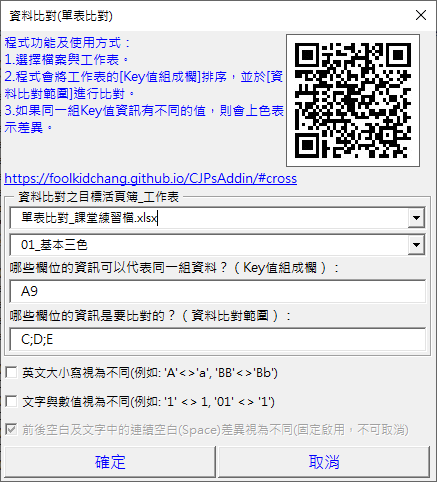

Excel 比對兩份資料哪裡不一樣：內容不同的格子自動標色
兩個系統的客戶資料，電話、地址有沒有不一樣？同一批訂單被重複匯入，金額有沒有被改過？一筆一筆用眼睛對很容易漏看。CJP 增益集 (CJPsAddin，免費的 Excel VBA Add-in) 的單表比對，把兩份資料貼在同一張表，指定 Key 和要比較的欄位，程式依 Key 排序後相同 Key 的列互相比較，內容不一樣的格子標成 粉紅，一眼就看出差在哪裡。
適合這些時候用
- 兩個系統的客戶資料，檢查電話、地址有沒有不一樣
- 同一批訂單被重複匯入，金額有沒有被改過
- 新舊兩版報表，逐筆核對數字
- 兩表比對後兩邊都剩一些「僅在」，想找出是哪一欄打錯
只想知道某筆資料有沒有在另一份名單裡，用兩表比對就好。
用 Excel 公式怎麼做？
常見的做法是用 VLOOKUP 把另一份資料的值抓過來，再比較兩欄是否相同 (假設客戶編號在 A 欄、電話在 C 欄，另一份資料在「B表」)：
=VLOOKUP(A2, B表!A:C, 3, FALSE)=C2
結果是 TRUE／FALSE，再用篩選或設定格式化的條件把 FALSE 標出來。麻煩的地方是：
- 每一個要比的欄位 (電話、地址、分行…) 都要各寫一欄公式
- 同一個編號有好幾筆時，VLOOKUP 只會抓到第一筆
- 文字「012」和數值 12、英文大小寫、前後空白，要不要算一樣，公式都要另外處理
用 CJP 增益集：3 個步驟
- 把兩份資料貼在同一張工作表 (上下接在一起)，在增益集選單點「常用功能二 → 資料比對 → 單表比對」
- 填 Key值組成欄 (哪些欄位代表同一組資料，例如
A9或A;B;9) 和資料比對範圍 (要比較內容的欄位，例如C;D;E) - 按「確定」，程式依 Key 排序後標出結果
預設英文大小寫、文字與數值都不分；需要時可以勾選「視為不同」。設定會記在工作表裡，下次自動帶入。

結果的四種標記
| 標記 | 意思 |
|---|---|
| 粉紅 | 同一組 Key 的這一格內容不一致 |
| 灰色整列 | 這組 Key 只有一筆，找不到可以比較的資料 |
| 藍色斜體 | 同一組 Key 的第 3 筆起 |
| 分隔線 | 換一組 Key |
常見問題
文字「012」和數值 12 會被當成一樣嗎？
兩個選項都不勾選時會當成相同：程式會先把能轉成數字的文字轉成數字再比。勾選「文字與數值視為不同」才會標成粉紅。
多了一個空白，會被抓出來嗎？
會。前後空白與連續空白一律視為不同，這個規則固定啟用、不能取消，方便抓出看不見的打字差異。
整列變灰色是什麼意思？
這組 Key 只有一筆，找不到可以比較的資料 (例如只在其中一份資料裡)。粉紅才是資料不一致。
要付費嗎？公司電腦可以裝嗎？
免費。安裝方式和注意事項請看安裝方式。程式會重新排序資料，使用前請先備份。